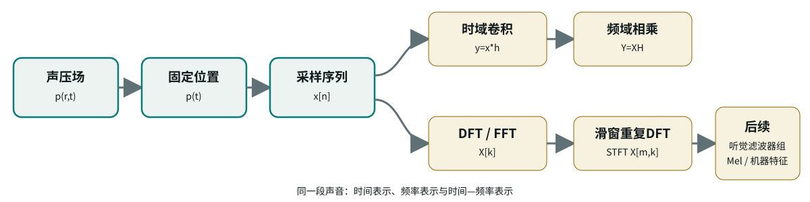
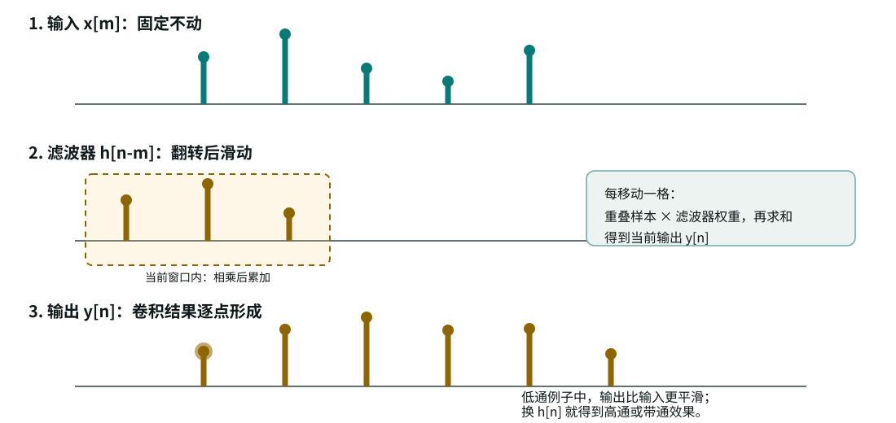
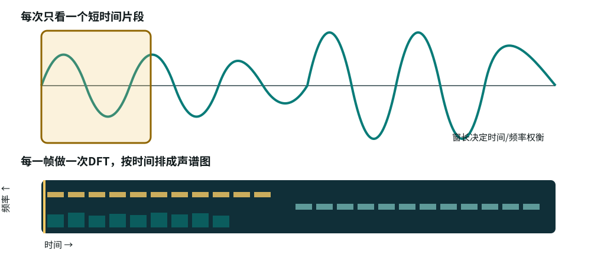

这一页要解决的核心问题
时域波形告诉我们“声音在什么时候怎样变化”。频域进一步把这种变化拆成不同的旋转速度： 慢的成分对应低频，快的成分对应高频。理解频域以后，卷积滤波、频率响应、DFT、声谱图和后续 Mel 特征会连成一条线。
REQUIRED FOUNDATION / 02
第一章已经把声音 从声压场固定到麦克风位置， 得到连续时间波形， 再经 ADC 得到采样序列。 这一页继续追问： 记录下来的变化中， 哪些变化慢、哪些变化快， 系统怎样改变它们， 机器又怎样得到频谱和声谱图。
OVERVIEW
时域波形告诉我们“声音在什么时候怎样变化”。频域进一步把这种变化拆成不同的旋转速度： 慢的成分对应低频，快的成分对应高频。理解频域以后，卷积滤波、频率响应、DFT、声谱图和后续 Mel 特征会连成一条线。

OBJECT
物理上，声音是空间与时间共同变化的声压场。麦克风固定在位置 后，我们观察到的是一个连续时间信号。ADC 再按采样周期 把它变成离散序列。
复用定义：采样率 ，理想采样要求 。这里的目标不是再解释“如何记录”，而是解释“记录以后如何分频率”。
CONVOLUTION
在离散时间里，一个滤波器可以由冲激响应 描述。它不是神秘的黑箱，而是一串权重：当前输入、前一个输入、再前一个输入各乘多少，最后相加得到输出。 对 FIR 滤波器来说，这个规则特别直接。
这条公式的读法是：把滤波器翻转并滑到当前时刻，找出与输入重叠的样本，逐点相乘，再把乘积相加。 因此“滤波”在时域上就是一组带延迟的加权求和；它在频域上才表现为低通、高通或带通。

计算： 。相邻样本被平均，慢变化保留，快速起伏更容易被抵消。
计算： 。常量或很慢的变化相减后接近 0，突变、边缘和快速振荡被突出。
一个易懂做法是级联高通和低通：先用差分去掉直流和慢漂移，再用短平均抑制太快的抖动。 这样留下的是一段中间频率范围。真实工程里会用更精确的 FIR/IIR 带通设计。
同一个 ，在时域看是加权求和，在频域看是频率响应 。低通、高通和带通不是三种不同的“计算动作”，而是不同权重序列在频率轴上形成的不同选择效果。
PHASOR
真实可测的声压可以写成余弦。为了同时记录振幅和相位，我们把它看成复旋转向量的实部：
是振幅， 是相位。复数没有增加新的声学物理量；它让微分、积分和滤波都变得可计算。 复用公式： 空间域附录中的复振幅解释。

对单频声场 ，时间微分对应乘以 。这就是频域把动态方程变简单的原因。
若直接使用正弦和余弦，每次微分、积分都要同时追踪振幅和相位。 使用复指数后，在单频稳态条件下，时间微分、时间积分和空间微分都变成简单的乘法或除法：
因此，时域中的线性化动量方程（牛顿第二定律）
在 和 的约定下，可以直接变成复振幅之间的代数关系：
一句话概括：复数表示把振幅和相位打包在 中，把微分和积分变成乘除法；计算完成后取实部，才得到真实声压。
FOURIER
拿一个频率为 的复指数与信号相乘并跨时间累加，就像在问：“这段声音里有没有这个频率？强不强？相位在哪里？” 频率匹配时，累加后留下较大结果；频率不匹配时，正负摆动大体抵消。
时域中的卷积，在频域中变成乘法。滤波器的频率响应 直接说明每个频率被放大、削弱或相移多少。
从连续卷积 出发，对 做傅里叶变换，并令 ，积分可以分解成 与 的乘积。
DFT
实际音频分析面对的是有限长度序列 。DFT 把这 个样本映射到 个离散频率格点。
FFT 不是新的变换，而是快速计算 DFT 的算法。课堂解释频谱时，先说清楚 是格点索引，不直接等于 Hz。
最高可表示频率由采样率决定；真正的频率分辨能力主要由有效观察时长和窗函数决定。 只做 zero-padding 会让图上的频率采样更密，但不会增加原记录中的真实信息。
| 改变什么 | 主要改变什么 | 不自动保证什么 |
|---|---|---|
| 增大采样率 | 可表示的最高频率提高。 | 不自动提高相邻低频的可分辨能力。 |
| 增大窗口长度 | 观察时间变长，频率格点变密。 | 不自动提高最高可表示频率。 |
| 只做 zero-padding | 图上采样点更密，峰位置更容易插值。 | 不增加原始记录中的真实频率信息。 |
TIME-FREQUENCY
语音、音乐和环境声通常不是稳定不变的。STFT 用滑动窗口反复做 DFT，把频率分析放回时间轴上。

| 时间侧条件或操作 | 频率侧结果 | 直觉 |
|---|---|---|
| 时间连续、非周期 | 连续频谱 | 理论上所有频率都可以被询问。 |
| 时间周期 | 离散线谱 | 只在基频整数倍上有傅里叶级数系数。 |
| 时间采样 | 频谱周期复制 | 复制间隔为 ；重叠就产生混叠。 |
| 时间截短或乘窗 | 原频谱与窗频谱卷积 | 截断导致主瓣、旁瓣与频谱泄漏。 |
| 频率采样 | 时间序列周期延拓 | DFT 把有限记录视为一个隐含周期。 |
ROUTE
前置知识： 前置知识：回到时域音频 ，复用采样、声压和波形定义。
进入实验： 打开频谱与 STFT 实验 ，用窗长、hop size 和不同声音检验频谱解释。
用于后续： 用于后续：查看已发布学习导览 ，理解人耳频率选择性、等响度、Mel 频谱与机器特征。
整合来源
本页由 `frequency-domain-45min-courseware.md` 与同目录四个 SVG 素材整理为学生 HTML 页面；教师时间提示未放入正文。
边界
Z 变换、极点零点、FFT 蝶形、STFT 逆变换、小波、Mel 和 MFCC 的详细计算不放在本页主线，留给后续专题或实验。